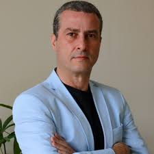

09 DE MAIO * A PARTIR DAS 7HRS
O maior evento de cirurgia bariátrica e metabólica ao vivo do Brasil. Uma imersão completa combinando transmissões em tempo real e discussões técnicas de alto impacto.
100% Online e 100% Gratuito
DETALHES DO EVENTO
No dia 09 de maio, às 7h, a tecnologia rompe as barreiras geográficas para unir o Brasil em uma jornada técnica sem precedentes. Percorreremos o país — de Manaus com o Dr. Victor Dib, passando por Goiânia com o Dr. Paulo Reis, até Passo Fundo com o Dr. Madalosso — contando ainda com a presença de convidados especialistas de renome para aprofundar cada debate.
Milhares de quilômetros de distância se dissolvem através de uma transmissão em alta-definição, entregando precisão cirúrgica diretamente na palma da sua mão. Sente-se na primeira fileira da inovação: nesta experiência, você não apenas assiste a procedimentos complexos; você absorve a estratégia clínica e o raciocínio técnico por trás de cada movimento dos grandes mestres.
A JORNADA INCLUI:
AGENDA OFICIAL
3 Cirurgias estratégicas, 3 Cidades, 1 Transmissão de Impacto. O evento definitivo para o cirurgião moderno.
Discussão de casos complexos e refinamento de técnica.
O futuro da cirurgia bariatrica já chegou.
Transmissão direta do coração da Amazônia com foco em Bypass Gástrico.
LIDERANÇA E VISÃO
Mais do que referências em suas regiões, estes são os profissionais que aceitaram o desafio de conectar o Brasil através do conhecimento. Unindo décadas de experiência a um olhar visionário sobre a tecnologia, eles lideram um movimento que transcende o centro cirúrgico para transformar a forma como você aprende e pratica a medicina.
PRESIDENTE

PRESIDENTE
PRESIDENTE